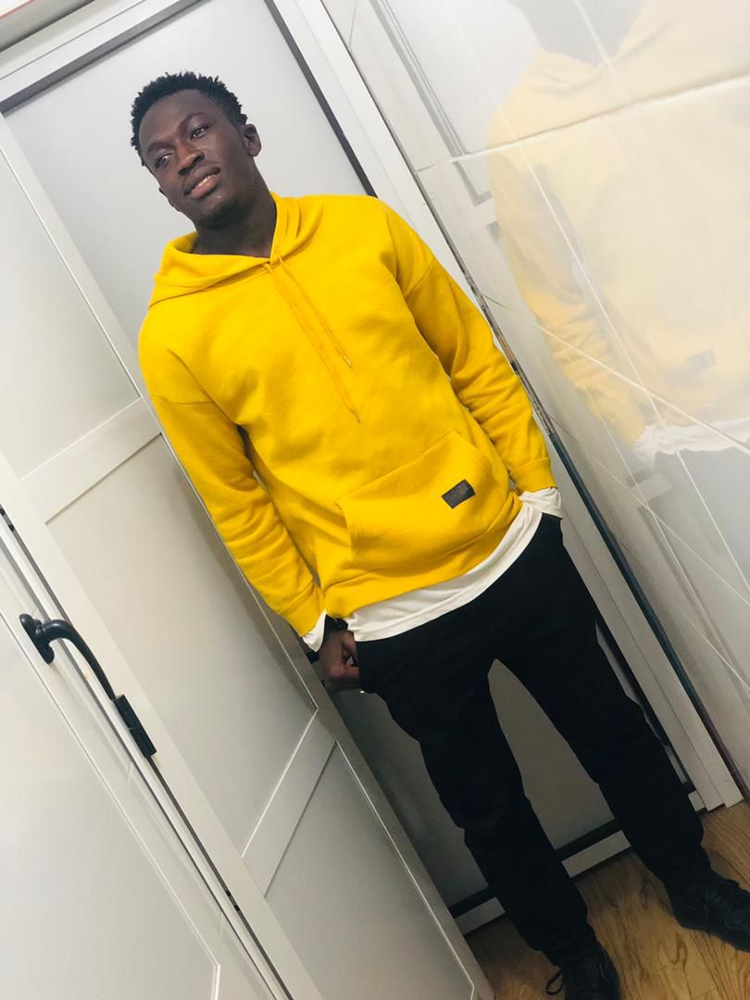
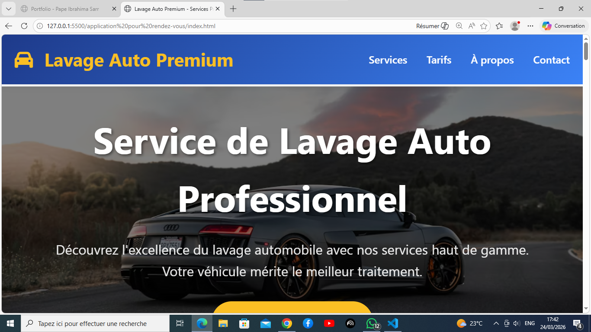
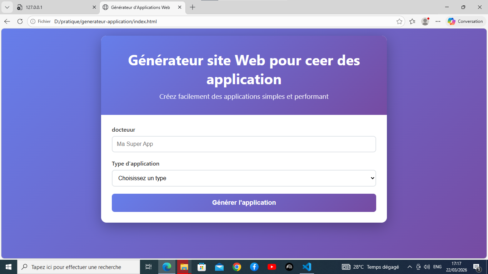
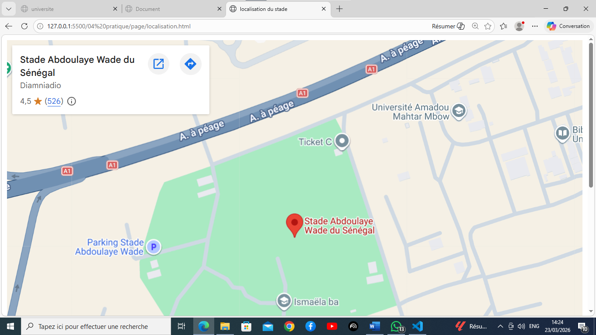
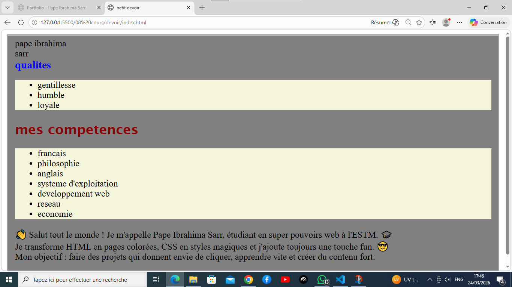

Pape Ibrahima Sarr
Développeur Web en Formation - Étudiant à l'ESTM Dakar
Passionné par la création d'expériences web modernes et intuitives
En savoir plusÀ propos de moi
Je suis Pape Ibrahima Sarr, étudiant en Génie Logiciel et Administration Réseau à l'École Supérieure de Technologie et de Management (ESTM) de Dakar.
Passionné par le développement web, je maîtrise HTML, CSS et les concepts fondamentaux des réseaux. Mon objectif est de créer des applications web modernes, responsives et intuitives.
mes competence
Parcours
J'ai commencé mon parcours en développement web il y a environ un an, motivé par une passion pour la création d'expériences numériques. Depuis, j'ai suivi une formation rigoureuse à l'ESTM Dakar, où j'ai acquis des compétences solides en HTML, CSS et les bases du développement web. J'ai également travaillé sur plusieurs projets personnels et académiques qui m'ont permis de mettre en pratique mes connaissances et de développer ma créativité. Mon objectif est de continuer à apprendre et à évoluer dans le domaine du développement web, en explorant de nouvelles technologies et en créant des applications innovantes.
filiere : informatique
université : ESTM Dakar
année académique :
2025-2026:en cours L1 en genie logiciel et administration
2024-2025: baccalaureat
Mes Projets
Application de Rendez-vous
Application complète de gestion de rendez-vous médicale. J'ai conçu un formulaire qui capture le sujet, la date, l'heure et la description du rendez-vous. La logique JavaScript gère l'ajout, l'affichage dynamique et la suppression. Les rendez-vous sont persistés dans localStorage pour conservation entre visites, ce qui montre une compréhension des APIs du navigateur.
Ce projet démontre une UX simple et efficace, une structure côté client robuste et la capacité à gérer du contenu dynamique au format carte.
 Voir le projet
Voir le projet
Plateforme d'Inscription
Plateforme multi-page pour l'inscription avec validation de format email, vérification de champs requis, et affichage de confirmation. Le site inclut des liens entre la page d'inscription et le tableau récapitulatif des inscrits.
Ce projet montre la capacité à structurer une interface de collecte de données, à travailler avec des formulaires accessibles, et à organiser l'information pour une lecture rapide des résultats.


Site Lavage Auto
Site vitrine responsive pour service de lavage automobile. Contenu : présentation de services, prix, appels à l'action, et formulaire de contact. Le design utilise des couleurs professionnelles et un style clair pour améliorer la crédibilité.
Ce projet illustre mes compétences en design visuel, hiérarchie de contenu et mise en page adaptative, ainsi que la capacité à construire un site commercial attractif.

Voir le siteGénérateur d'Applications
Outil développé pour produire rapidement un template d'application web à partir d'un formulaire. L'utilisateur renseigne des informations comme le nom de l'application et le type de projet, puis la page affiche automatiquement un code HTML de base, prêt à être personnalisé.
Ce projet met en valeur ma capacité à structurer des interfaces claires et accessibles, à organiser un flux d'utilisateur logique, et à proposer une expérience rapide pour la création de prototypes. Il est conçu en HTML/CSS et prépare le terrain pour une évolution future en ajoutant des fonctionnalités dynamiques avec JavaScript.

Voir l'outilprojet d'stade abdoulaye wade du senegal
projet de site pour le stade abdoulye wade du senegal qui presente les differents services du stade et les differentes activites qui se deroulent dans le stade

voir le projetDevoir Cours 08
Exercice pédagogique combinant HTML et CSS pour créer une page personnelle claire et professionnelle. J'ai structuré la page en sections, un texte de présentation, une liste de compétences, et un design qui reflète un CV web simple et efficace.
J'ai utilisé le HTML pour organiser le contenu (titres, paragraphes, listes et liens), puis appliqué des styles CSS pour les marges, les couleurs, l'ombre et les arrondis. Ce projet montre mon attention aux détails visuels et à l'expérience utilisateur.
Ce devoir prouve ma capacité à transformer un besoin (présenter un élève/professionnel) en une page web fonctionnelle. Il met en évidence mes compétences en structuration d'information, en présentation professionnelle, et en création d'une interface cohérente et responsive.

Voir le devoirexercice traite au cour de l'annee
j'ai ralise plusieur exercice au cour de l'annee et j'ai aussi realiser dess projet
voir voirContactez-moi
Restons en contact
N'hésitez pas à me contacter pour discuter de projets, collaborations ou simplement pour échanger sur le développement web.
Email: papeibrahimasarr01@gmail.com
Localisation: Dakar, Sénégal
Formatiorn: ESTM Dakar
telephone +221 76 134 52 89